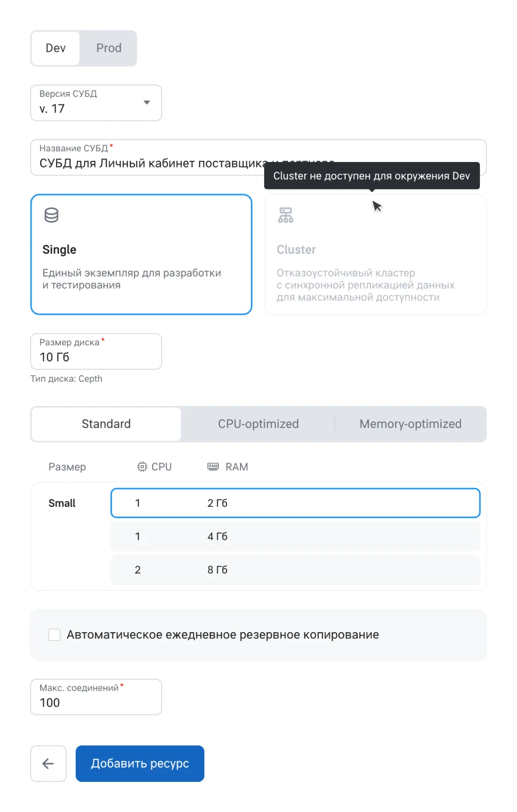
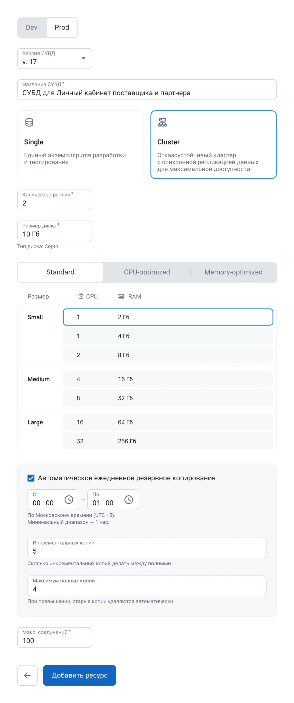
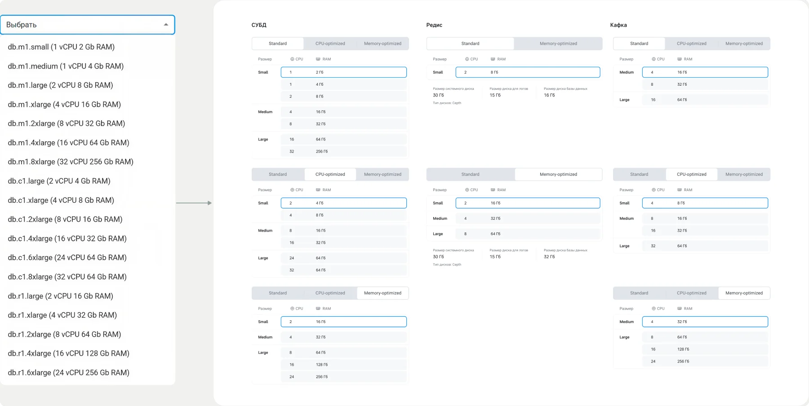
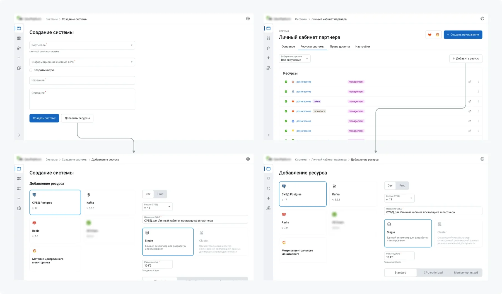
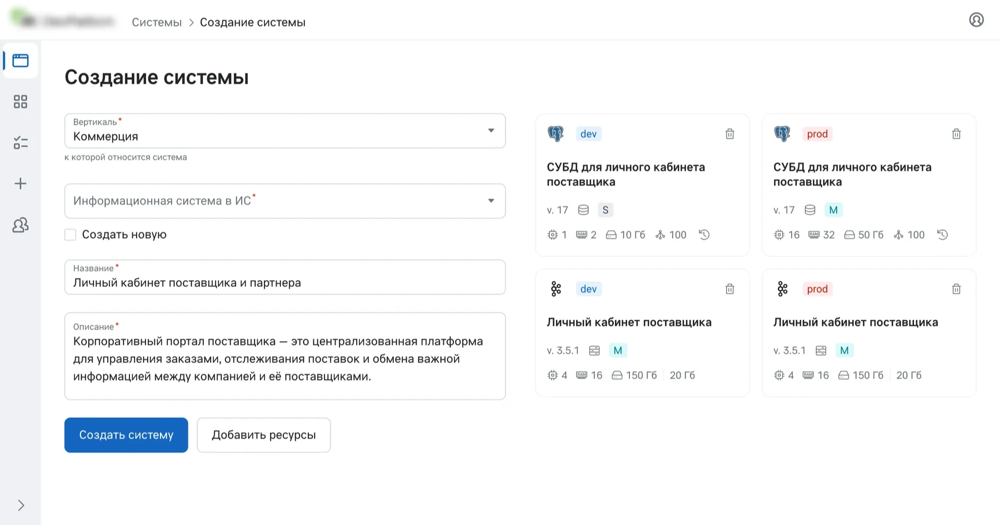
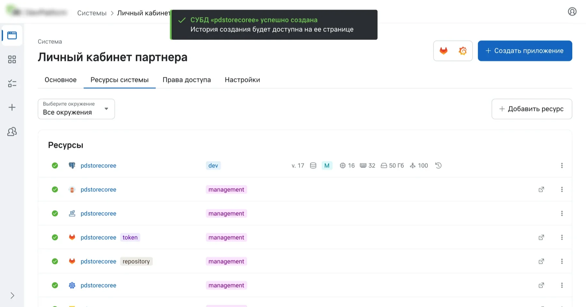
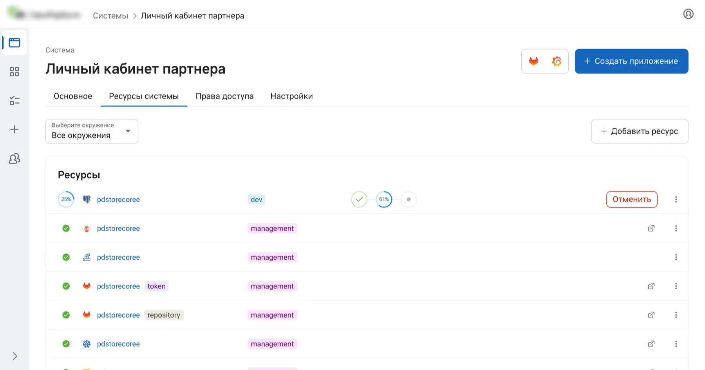

Без базы данных сервис не запускается, а базу ждали неделю
Внутренняя платформа для разработчиков нужна, чтобы команды запускали проекты сами. До неё запуск системы занимал больше 30 ручных шагов и около 24 дней.
Один из главных блоков этого пути — инфраструктурные ресурсы. Базу данных разработчик получал по заявке в DevOps через 3–10 дней, и всё это время сервис не мог запуститься, а DevOps тратили экспертное время на однотипные запросы.
Задача: понять, что разработчикам действительно нужно настраивать самим, и сделать интерфейс, в котором они создают ресурсы без DevOps, а от типовых ошибок их страхуют значения по умолчанию и ограничения.
Разработчики не хотят настраивать инфраструктуру
Сначала я обсудил с техлидом постановку: что нужно сделать, какие есть технические ограничения, каким он видит решение и что проверить с пользователями. Потом провёл 8 интервью с разработчиками и тимлидами о том, какие параметры им понятны и какие они готовы выбирать сами.
Тема была для меня новой, поэтому термины я заранее разбирал с помощью ИИ. Экспертом в инфраструктуре я от этого не стал, но на интервью понимал, о чём идёт речь, и мог уточнять детали.
Большинство не знает, какие значения выбирать, и не считает это своей зоной ответственности, но в сложных случаях хочет доступа к деталям. Отсюда главное требование:
Типовой сценарий
- Разработчик выбирает окружение и понятный пресет. Остальные поля уже заполнены подходящими значениями, менять их не обязательно
Нестандартный сценарий
- Дополнительные настройки и возможность обратиться к DevOps. В MVP пока это запрос команде платформы
Экспертиза DevOps должна жить в пресетах и значениях по умолчанию, а не в голове разработчика
Что ещё выяснилось на интервью
| Ожидание разработчиков | Что это значит для дизайна | В релизе |
|---|---|---|
| Понятные пресеты вместо списка параметров | Конфигурации подписаны как размеры одежды: S, M, L | Реализовано |
| Разные правила для dev и prod | Окружение задаёт доступные конфигурации и значения по умолчанию. Согласование prod отложено. | Частично |
| Прозрачность стоимости и SLA | Видно, за что платишь и на что можешь рассчитывать | Отложено |
| Встроенный мониторинг | Дашборды снимают большинство вопросов без обращения к DevOps | Отложено |
Что взял у аналогов и от чего отказался
У решений на рынке и внутри компании я взял предустановленные конфигурации, но не перегруженный интерфейс с десятками параметров и инженерной терминологией. Оставил только параметры, которые разработчики назвали понятными и важными, остальное заменил значениями по умолчанию.
Ключевые решения
1. Окружение задаёт правила
Это главное решение в проекте: выбор окружения перестраивает форму. Где выбор за разработчиком, интерфейс подставляет значения по умолчанию, а где ошибка стоит дорого, ограничивает.
Dev
- Только конфигурации S, остальные скрыты
- Кластер заблокирован, подсказка объясняет почему
- Резервное копирование выключено
Prod
- Доступны конфигурации S, M и L
- Кластер и 2 реплики включены
- Резервное копирование включено, но его можно выключить
Запрещено немногое: в dev — конфигурации больше S и кластер, а диск и число соединений ограничены минимумом и максимумом, и значение вне диапазона поле не примет. Резервное копирование в prod — рекомендация: оно включено, но его можно выключить.
Почему в dev ограничение, а не рекомендация. В MVP ресурсы оплачивает сама платформа, и бюджет должен уходить на реальные нагрузки, а не на тестовые стенды с запасом. Рекомендацию легко пропустить, ограничение — нет. Цена решения: если команде для тестов нужно больше, она пишет команде платформы.


2. Конфигурации по человеческой логике
Конфигурации, доступные в корпоративном инфраструктурном продукте, я сгруппировал по размеру (S, M, L) и по типу оптимизации (стандартная, под память, под процессор), а границы размеров сверил с разработчиками и DevOps. Выбор из технической задачи стал продуктовым: сколько и под что.

3. Ресурс можно добавить сразу или потом
На интервью одни разработчики заводили систему заранее и добавляли ресурсы по ходу, другие поднимали всё сразу при создании проекта. Я поддержал оба пути: ресурсы можно задать при создании системы или добавить позже, по мере появления задач.


4. Конфигурация видна без запроса к DevOps
Частая причина обращений к DevOps — вопрос «что у нас там вообще стоит». Поэтому версия, конфигурация и лимиты видны прямо в списке ресурсов, там же виден прогресс создания.


Что не вошло в релиз
Платформа делалась с нуля, и в MVP вошёл только типовой сценарий. Отложили:
- Расширенный режим. Нужен редко, пока его заменяет запрос команде платформы.
- Редактирование созданной базы данных. Слишком много пограничных случаев, решили не выпускать сырым.
- Оплату ресурсов. Пока их оплачивает платформа, а не продукты.
- Согласование prod, стоимость и SLA, мониторинг из таблицы выше.
Система с СУБД за 40 минут вместо 24 дней
После релиза команда замерила время создания систем на платформе: от 20 до 80 минут в зависимости от числа ресурсов, с одной базой данных в среднем 40 минут. Раньше тот же путь занимал около 24 дней. Это результат всей платформы, мой участок в нём — ресурсы: 15 минут вместо 3–10 дней ожидания заявки.
Разработчики начинают проект в тот же день, DevOps перестали быть узким горлышком в рутинных запросах, а конфигурации собраны по единым правилам вместо разнородных ручных настроек.
Как считали. Сроки до платформы взяты из анализа процесса на старте её разработки. Время создания ресурса замерено от нажатия «Добавить ресурс» до готовности, время создания системы — по фактическим замерам после релиза.
Выводы
Передать настройку разработчику можно, только если она не требует экспертизы, которой у него нет. Поэтому основная работа была не в самой форме, а в том, что в неё не попало: в пресетах, значениях по умолчанию и ограничениях.
Что сделал бы иначе. Сроки позволили проверить решение только внутри команды разработки. Сейчас я бы отстоял хотя бы короткий тест прототипа с участниками интервью: формулировки в выборе конфигураций стоило проверить на тех, кто будет ими пользоваться.
Что проверить дальше. Жалоб после релиза не было, но понятность конфигураций это не доказывает. Я бы попросил нескольких разработчиков выбрать конфигурацию для своего сервиса и сравнил с выбором DevOps. Если выбор часто расходится, менять нужно подписи или границы размеров.